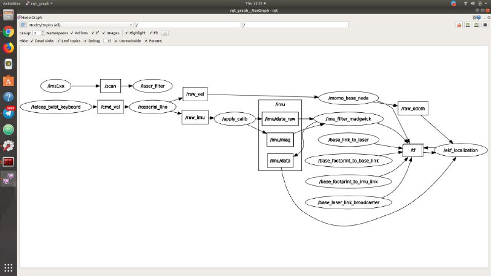

Software¶
MOMObot is using a modified Linorobot stack!
Overview¶
ROS Melodic Morenia
Jetpack 4.4.1, L4T 32.4.4 [Ubuntu 18.04.5 LTS]
Linorobot to Momobot stack changes:
Changed Linorobot to Momobot names in code
Changed motor driver code
Retargeted several packages
3.1 Pre-Requisites¶
ROS Proficiency
Intermediate Linux/Ubuntu Command Line Proficiency
Python3 & C++ [Good to have]
- Linorobot experience
platformio¶
Would be used to flash the teensy firmware, install via pip3 install.
$ sudo pip3 install platformio
pygame¶
Ensure that pygame is installed before running momo_emotions.
$ sudo apt-get install python-pygame
ROS Packages¶
Ensure that the relevant ROS pacakages are installed:
$ sudo apt install ros-melodic-robot-localization
$ sudo apt install ros-melodic-rosserial-python
$ sudo apt install ros-melodic-imu-filter-madgwick``
Teensy¶
Setup¶
The teensy driver could be downloaded from their website.
1. Download the udev rules for the teensy and copied it to the
/etc/udev/rules.d/ directory.
$ wget https://www.pjrc.com/teensy/49-teensy.rules #To download the udev rules
$ sudo cp 49-teensy.rules /etc/udev/rules.d/
Ensure that Arduino has been installed beforehand, if not install the relevant linux package from their webpage. (The Jetson Nano uses the 64bit ARM architecture.)
Download the corresponding Teensyduino installer, in our case would be the
AARCH64package here.Add the execute permission to the installer script and then execute it.
$ chmod 755 TeensyduinoInstall.linux64
$ ./TeensyduinoInstall.linux64
Configuration¶
To access the Teensy, change the access permission of the Teensy via chmod.
$ sudo chmod 777 /dev/ttyACM0
Note
Replace /dev/ttyACM0 to the device port of the Teensy accordingly!
To make it easier to identify teensy, we’ll attach a symbolic link to the
device name. We’ll bind the teensy to a symbolic link (custom name) via udev
(So instead of /dev/ttyACM0, it would be /dev/momobase). Double check the
attributes of the device.
$ udevadm info -a -p $(udevadm info -q path -n /dev/ttyACM0)
Teensy could be identified via ATTRS{manufacturer}=="Teensyduino" in the
list, Note down the values of ``ATTRS{idVendor}`` and ``ATTRS{idProduct}``.
The output would look something like this as shown below.
looking at parent device '/devices/70090000.xusb/usb1/1-2/1-2.4':
KERNELS=="1-2.4"
SUBSYSTEMS=="usb"
DRIVERS=="usb"
ATTRS{authorized}=="1"
ATTRS{avoid_reset_quirk}=="0"
ATTRS{bConfigurationValue}=="1"
ATTRS{bDeviceClass}=="02"
ATTRS{bDeviceProtocol}=="00"
ATTRS{bDeviceSubClass}=="00"
ATTRS{bMaxPacketSize0}=="64"
ATTRS{bMaxPower}=="100mA"
ATTRS{bNumConfigurations}=="1"
ATTRS{bNumInterfaces}==" 2"
ATTRS{bcdDevice}=="0275"
ATTRS{bmAttributes}=="c0"
ATTRS{busnum}=="1"
ATTRS{configuration}==""
ATTRS{devnum}=="7"
ATTRS{devpath}=="2.4"
ATTRS{idProduct}=="0483" <==== Take note of this
ATTRS{idVendor}=="16c0" <==== And this
ATTRS{ltm_capable}=="no"
ATTRS{manufacturer}=="Teensyduino"
ATTRS{maxchild}=="0"
ATTRS{product}=="USB Serial"
ATTRS{quirks}=="0x0"
ATTRS{removable}=="unknown"
ATTRS{serial}=="2952920"
ATTRS{speed}=="12"
ATTRS{urbnum}=="10"
ATTRS{version}==" 1.10"
After that, open up /etc/udev/rules.d/99-nv-l4t-usb-device-mode.rules
with a text editor.
Important
Double check the files in the /etc/udev/rules.d/ directory, the device rule
file may differ for different devices/computer.
$ sudo nano /etc/udev/rules.d/99-nv-l4t-usb-device-mode.rules
Add the following line.
ACTION=="add", ATTRS{idVendor}=="16c0", ATTRS{idProduct}=="0483", SYMLINK+="momobase"
Disconnect and reconnect the teensy for the change to take affect. Listing
/dev/momobase should be found.
$ ls /dev/momobase
Flashing the firmware¶
(Or uploading the code)
To flash the teensy firmware, platformio would be used. To do so, simply run
platformio run.
$ cd momobot/momobot_ws/src/momobot/teensy/firmware
$ platformio run --target upload
When platformio is ran for the first time, it would download the relevant manager/tools for the Teensy.
Hint
Facing issues? Check out the troubleshooting section below!
3.2 Setting Up MOMObot¶
Logging into MOMObot¶
These settings are for our internal use only. You might have to change it around to whatever WiFi network credentials and addresses your own implementation of the MOMObot stack will use.
Login to MOMObot, we use the SUTD_LAB WiFi network, with these credentials
ssh <USERNAME>@10.21.132.80
Or
ssh momobot
Note
Note, this only works if you’ve configured an SSH Alias for MOMObot!
To do so, put this inside ~/.ssh/config (Make the file if it doesn’t exist using sudo touch ~/.ssh/config or sudo nano ~/.ssh/config)
Host momobot # SUTD_LAB Port 22 User <USERNAME> HostName 10.21.132.80
- Access the teensy config file
roscd momobot/teensy/firmware/lib/configOpening this file will expose the PID values for tuning
Setting Static IP for New Robots¶
A static IP is needed so as to be able to ssh into the robot
Setup static IP
$ route -n # Use this to check default gateway and netmaskNetmask is the Genmask
Gateway is Gateway
Also check if you need a DNS setup. (SUTD requires this one: 192.168.2.100)
Then enable ssh
$ sudo apt-get install openssh-server
To set Static IP, under WiFi connection settings, click edit connections. Set IPV4, set manual, set static address, Netmask and Gateway, according to route -n in the commandline
To work with SUTD wifi for internet, use DNS Server: 192.168.2.100
Install ROS and Other Packages if needed¶
- Run the install scripts from setup_scripts
- Specific order:
./convenience_tools_install./ros_lino_base_install./robot_playground_install
This should install your net tools, ROS, as well as the pre-requisite Linorobot stack.
Then, copy paste the scripts in the src directory inside a ROS workspace, preferably called
momobot_ws
Setup the ~/.bashrc on MOMOBot as well as your Computer¶
(Otherwise you won’t be able to get any ROS data!!!)
On MOMObot¶
Open up the your prefered shell config in a text editor
Bash (Default)
$ sudo nano ~/.bashrc
zsh
$ sudo nano ~/.zshrc
Append the following in the shell configuration file:
Important
PLEASE REMEMBER TO CHANGE THE THINGS IN <> & Remember to save also!
Bash (Default)
...
source /opt/ros/melodic/setup.bash
source ~/catkin_ws/devel/setup.bash
source /home/<USERNAME>/<ROS_WORKSPACE_NAME>/devel/setup.bash
source ~/<ROS_WORKSPACE_NAME>/devel/setup.bash
export LINOLIDAR=lms111
export LINOBASE=2wd
export ROS_PACKAGE_PATH=$ROS_PACKAGE_PATH:/home/<USERNAME>/<ROS_WORKSPACE_NAME>/src
alias costmap_reset="rosservice call /move_base/clear_costmaps"
export ROS_IP=<IP ADDRESS OF ROBOT>
export ROS_HOSTNAME=<IP ADDRESS OF ROBOT>
zsh
...
source /opt/ros/melodic/setup.zsh
source ~/catkin_ws/devel/setup.zsh
source /home/<USERNAME>/<ROS_WORKSPACE_NAME>/devel/setup.zsh
source ~/<ROS_WORKSPACE_NAME>/devel/setup.zsh
export LINOLIDAR=lms111
export LINOBASE=2wd
export ROS_PACKAGE_PATH=$ROS_PACKAGE_PATH:/home/<USERNAME>/<ROS_WORKSPACE_NAME>/src
alias costmap_reset="rosservice call /move_base/clear_costmaps"
export ROS_IP=<IP ADDRESS OF ROBOT>
export ROS_HOSTNAME=<IP ADDRESS OF ROBOT>
On Computer¶
sudo nano ~/.bashrcAppend this
PLEASE REMEMBER TO CHANGE THE THINGS IN <>
ip=$(ip addr show wlo1 | grep -o 'inet [0-9]\+\.[0-9]\+\.[0-9]\+\.[0-9]\+' | grep -o [0-9].*)
export ROS_MASTER_URI=http://<ROBOT_IP_ADDRESS>:11311
export ROS_IP=$ip
export ROS_HOSTNAME=$ip
3.3 Running MOMObot Capabilities¶
This section assumes knowledge of ROS and basic Linorobot packages. This is because MOMObot is based heavily on the Linorobot stack.
Startup and Bringup Process¶
- Ensure that all electronics are connected and turned on
Ensure that the electronics battery has sufficient charge or the LIDAR will fail to function
Check to ensure that the LIDAR ethernet cable is connected properly or LIDAR data will not be parsed to the MOMObot stack
Disengage the E-stop
SSH into Momobot:
ssh <USERNAME>@10.21.132.80Begin running commands, make sure they’re in individual terminals!
When a command says MOMOBOT, do it in a terminal that is SSHed into MOMObot, or from the MOMObot computer directly
When the command says COMPUTER, do it on a ground station computer
MOMOBOT: Start ROSCORE before anything else (in it’s own terminal on the MOMObot computer / SSH terminal):
roscoreIt is helpful to run roscore FIRST, so if the rest of the roslaunch-es die, you can kill and restart them easily without killing the ROS Master
MOMOBOT: Bringup the MOMObot base controller: roslaunch momobot bringup.launch
Ensure that the robot is not moving during this process as the IMU will be calibrating during bringup.launch. IMU drift will be present if the robot is in motion during this process
Encoder ticks will be visible in this terminal window. This can be a clear indication that the motor hall sensors are being detected and can also be used for the purposes of PID tuning
- COMPUTER: Start the tele operation package in it’s own terminal (preferably on the ground station computer, not MOMObot):
rosrun teleop_twist_keyboard teleop_twist_keyboard- This will enable tele-operation functionality on MOMObot (follow the screen for instructions)
Checking MOMO Functionality¶
This of course requires that you have MOMObot brought up already.
COMPUTER - Open rviz:
roscd linorobot/rviz/rviz -d odometry.rvizUnder the topic tab on the left menu, it is possible to change the topic between
/odomand/raw_odom.It is also possible to add an additional topic and then set the keep to a larger number (e.g 10000) so as to allow for easier visualization
ROS Graph Debugging Refresher¶
- If visualization of all ROS nodes is required for debugging purposes, run
rosrun rqt_graph rqt_graph- This will bringup the rqt graph that visualizes all ROS relations and nodes, allowing for easy debugging.
(ROS nodes as seen in RQT Graph)
/scan: laser data/laser_filter: custom node for filtering laser data/rosserial_lino: adapter for connecting to teensyIt obtains
raw_velwhich is then sent to themomo_base_nodeThis information is then sent to
/raw_odomfor odometry estimations/raw_odominformation will be sent to/ekf_localizationto be used for Extended Kalman Filtering estimation of the Robot’s location
/imu/data: the raw data from IMUIt is also fed into``/ekf_localization``
After these commands are ran the following features on Momobot are enabled:
Teleop, motors
Laser data
Encoder and IMU
Odometry testing
3.4 Tuning MOMObot¶
Changing The Map¶
If you happen to have a new map that you want MOMObot to use, simply add the map and its corresponding .yaml to the momobot/maps directory.
Then, point the map_server node to the proper map by editing the navigate.launch file!
roscd momobot/launch
nano navigate.launch
You’ll want to replace this line, changing the map_file argument!
<arg name="map_file" default="$(find momobot)/maps/<YOUR_MAP_NAME_HERE>.yaml"/>
EKF Tuning¶
Method¶
Mark out a square of 3m x 3m using tape
Using tele-operation, drive the robot in a square
- on Computer in the same terminal
roscd/linorobot/rviz/rviz -d odometry.rvizThis can be used to view the distance the robot has think it has travelled
- In Rviz
Click on Odometry in the left topic pane (it is possible to select /odom and /raw_odom)
It is recommended to add another topic and indicator for /raw_odom separately to visualize it alongside the filtered odometry
Change the shaft length, radius and etc as necessary (set the color to 0, 255, 0 to ensure that the arrows are distinguishable from /odom arrows)
Now you can edit the
robot_localization.yamlEKF parameters!roscd momobot/param/ekf nano robot_localization.yaml
Tuning Localization Parameters¶
roscd momobot/launch/include, thennano amcl.launchParameters of interest: - laser_max_range - min_particles - max_particles - odom_alpha1 (Rotation noise from rotation) - odom_alpha2 (Rotation noise from translation) - odom_alpha3 (Translation noise from translation) - odom_alpha4 (Translation noise from rotation)
3.5 Console Commands¶
Note
Each command is in each individual terminal, opened INSIDE MOMOBOT (i.e. in a terminal that is SSHed into MOMOBOT)
Set Pose¶
echo resetting pose... && rostopic pub /initialpose geometry_msgs/PoseWithCovarianceStamped '{header: {frame_id: "map"}, pose: {pose: {position: {x: 76.401, y: -15.676, z: 0.0}, orientation: {x: 0.0, y: 0.0, z: -0.10356, w: 0.99462}}, covariance: [0.25, 0.0, 0.0, 0.0, 0.0, 0.0, 0.0, 0.25, 0.0, 0.0, 0.0, 0.0, 0.0, 0.0, 0.0, 0.0, 0.0, 0.0, 0.0, 0.0, 0.0, 0.0, 0.0, 0.0, 0.0, 0.0, 0.0, 0.0, 0.0, 0.0, 0.0, 0.0, 0.0, 0.0, 0.0, 0.06853891945200942]}}' --once && echo clearing costmaps... && rosservice call /move_base/clear_costmaps && echo done!
3.6 Mapping¶
roslaunch momobot slam.launchon COMPUTERrosrun map_server map_saverto save the map in the current directory. This saves your map files into .yaml files and .pgm files. .pgm can be editted in photoshop, etc like a .png file.If you need to change the map name, do it in the
.yamlfile.
Setting your maps¶
Under
roscd momobot, name the map properly as the.yamlfiles will be used to load map files here.
3.7 Exporting Display to MOMObot from Computer¶
export DISPLAY:0enables you to run commands on other computer instead of your computer. Ensure that you are on the right terminal MOMOBOTrosrun momo_emotions cmd_vel_face_tracking.pyto run face cmd_vel tracking script on MOMObot from the Computer TerminalThis allows the script to be started during events or situations where it may be difficult to access the on-board computer
3.8 Semantic Pose and Semantic Pose Sounder Packages¶
Note
The semantic_pose package allows the robot to map robot coordinates to
named locations. You can use this alongside semantic_pose_sounder to
let MOMObot play voice lines upon entering a particular named location!
Must be on MOMOBOT:
roslaunch semantic_pose_sounder semantic_pose_sound.launchThis loads all the ros parameters required.
Edit them in the associated config.yaml in the package (Check it out with
roscd semantic_pose_sounder)The location parameters are set in the following format:
'location: [boundingpt1, boundingpt2, boundingpt3...]'Set as many bounding points as necessary but ensure that they are in clockwise or anti-clockwise direction
Bounding points define the boundary for a location (robot will be considered in that location if it is within the boundary)
Get bounding points from the map by running navigate.launch. The coordinates for various points on the map can be read easily
You can then define their names, which will be the strings published to /location when the robot is localised within those map zones
You can also define the corresponding MP3s to play!
To check MOMObot’s current location:
rostopic echo location
3.9 Software To-Dos¶
Laser scan matcher
Visual odometry
Depth camera integration
- Rear LiDAR integration (Need to combine the
/scanssomehow) Once that’s done we can swap to the DWA planner to allow MOMObot to reverse!
- Rear LiDAR integration (Need to combine the
3.10 Troubleshooting¶
libusb-0.1.so.4 not found (platformio issue)¶
If you encounter the following issue:
teensy_loader_cli: error while loading shared libraries: libusb-0.1.so.4: cannot open shared object file: No such file or directory
*** [upload] Error 127
It could fix be downloading the required library through apt install.
$ sudo apt-get install libusb-0.1-4
SDL Issue¶
[CRITICAL] [Window ] Unable to find any valuable Window provider. Please enable debug logging (e.g. add -d if running from the command line, or change the log level in the config) and re-run your app to identify potential causes
egl_rpi - ImportError: cannot import name 'bcm'
File "/usr/lib/python3/dist-packages/kivy/core/__init__.py", line 63, in core_select_lib
fromlist=[modulename], level=0)
File "/usr/lib/python3/dist-packages/kivy/core/window/window_egl_rpi.py", line 12, in <module>
from kivy.lib.vidcore_lite import bcm, egl
sdl2 - ImportError: libSDL2_image-2.0.so.0: cannot open shared object file: No such file or directory
File "/usr/lib/python3/dist-packages/kivy/core/__init__.py", line 63, in core_select_lib
fromlist=[modulename], level=0)
File "/usr/lib/python3/dist-packages/kivy/core/window/window_sdl2.py", line 27, in <module>
from kivy.core.window._window_sdl2 import _WindowSDL2Storage
x11 - ModuleNotFoundError: No module named 'kivy.core.window.window_x11'
File "/usr/lib/python3/dist-packages/kivy/core/__init__.py", line 63, in core_select_lib
fromlist=[modulename], level=0)
[CRITICAL] [App ] Unable to get a Window, abort.
The following issue is caused by a missing sdl2 library, could be resolved by installing the python3-sdl2 package.
$ sudo apt install python3-sdl2
D-Bus Issue (Jetson TX2)¶
If there are issues running programs that utillises the kivy lib as shown below:
[INFO ] [Window ] Provider: sdl2(['window_egl_rpi'] ignored)
dbus[24434]: arguments to dbus_message_new_method_call() were incorrect, assertion "path != NULL" failed in file ../../../dbus/dbus-message.c line 1362.
This is normally a bug in some application using the D-Bus library.
D-Bus not built with -rdynamic so unable to print a backtrace
Aborted (core dumped)
Add DBUS_FATAL_WARNINGS=0 before the program name: (Reference)
DBUS_FATAL_WARNINGS=0 {python_script}
Replace python_script with the program name.